시계열 데이터 예측
Table of contents
*Facebook의 오픈소스 라이브러리인 ‘Prophet‘을 활용
Prophet 기초
이론
- 세 개의 주요 요소를 활용해 예측: Trend, Seasonality, Holiday
- $ y(t) = g(t) + s(t) + h(t) + \epsilon_i $
- $g(t)$: the trend function. models non-periodic changes in the value of the time series.
주기적이지 않은 변화를 반영 (트렌드를 반영) - $s(t)$: represents periodic changes (ex. weekly / yearly seasonality)
주기적인 변화를 반영 (주, 일, 연 등의 기간에 따라 주기적으로 나타나는 흐름) - $h(t)$: represents the effects of holidays
불규칙한 event인 휴일의 영향을 반영 - $\epsilon_i$: the error term. represents any unusual changes not accommodated by the model
(정규분포를 따른다고 가정)
- $g(t)$: the trend function. models non-periodic changes in the value of the time series.
시계열 데이터 준비
# 필요한 library를 import
import pandas as pd
import matplotlib.pyplot as plt
%matplotlib inline
from datetime import datetime
from pandas_datareader import data
1. Alphabet (Google 모기업) 주식 정보 가져오기
start_date = datetime(2020, 1, 1)
end_date = datetime(2021, 5, 1) ## cf) datetime.now()라고 하면 오늘 날짜로 가져옴
Google = data.DataReader('GOOGL','yahoo', start_date, end_date) # yahoo 주식 데이터에서 Alphabet 주식 데이터 가져옴
Google.head()
| Date | High | Low | Open | Close | Volume | Adj Close |
|---|---|---|---|---|---|---|
| 2020-01-02 | 1368.68 | 1346.49 | 1348.41 | 1368.68 | 1363900 | 1368.68 |
| 2020-01-03 | 1373.75 | 1347.32 | 1348 | 1361.52 | 1170400 | 1361.52 |
| 2020-01-06 | 1398.32 | 1351 | 1351.63 | 1397.81 | 2338400 | 1397.81 |
| 2020-01-07 | 1403.5 | 1391.56 | 1400.46 | 1395.11 | 1716500 | 1395.11 |
| 2020-01-08 | 1411.85 | 1392.63 | 1394.82 | 1405.04 | 1765700 | 1405.04 |
# 종가(Close) 기준으로 그래프 그려보기
Google['Close'].plot(figsize=(11,5), grid=True);
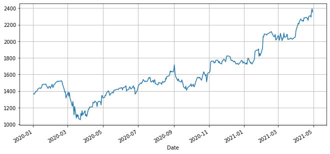
2. 2021.01 전까지로 데이터를 자르기
# 2020-12-31까지의 데이터만을 사용: 2021-05-01까지의 데이터를 예측해볼 예정
Google_2020 = Google[:'2020-12-31']
Google_2020.tail()
| Date | High | Low | Open | Close | Volume | Adj Close |
|---|---|---|---|---|---|---|
| 2020-12-24 | 1742.41 | 1724.35 | 1729 | 1734.16 | 465600 | 1734.16 |
| 2020-12-28 | 1787 | 1741.82 | 1744.91 | 1773.96 | 1382500 | 1773.96 |
| 2020-12-29 | 1788.47 | 1755.11 | 1787.23 | 1757.76 | 986300 | 1757.76 |
| 2020-12-30 | 1767.76 | 1728 | 1765 | 1736.25 | 1051300 | 1736.25 |
| 2020-12-31 | 1757.5 | 1736.09 | 1737.27 | 1752.64 | 1053500 | 1752.64 |
3. Prophet에 학습시키기 위한 포맷으로 맞추기
- pandas.DataFrame with ‘y’ and ‘ds’ columns
# Prophet에 학습시키려면 아래와 같은 포맷이여야 함
df = pd.DataFrame({'ds':Google_2020.index, 'y':Google_2020['Close']})
df.reset_index(inplace=True, drop=True)
df.head()
| ds | y | |
|---|---|---|
| 0 | 2020-01-02 | 1368.68 |
| 1 | 2020-01-03 | 1361.52 |
| 2 | 2020-01-06 | 1397.81 |
| 3 | 2020-01-07 | 1395.11 |
| 4 | 2020-01-08 | 1405.04 |
Prophet으로 시계열 예측
- 먼저
pip install pystan,pip install prophet으로 설치해줘야 사용 가능 (설치 방법) - Google Colaboratory에서는 별도의 설치 없이 import해서 사용 가능
from fbprophet import Prophet
m = Prophet()
m.fit(df)
- yearly seasonality와 daily seasonality는 따로 써주지 않으면 반영되지 않음
1. 2021.05.01까지의 주가를 예측해 봄
future = m.make_future_dataframe(periods=121) # 2021.05.01까지의 데이터를 예측할 예정 (=121일)
forecast = m.predict(future)
forecast[['ds', 'yhat', 'yhat_lower', 'yhat_upper']].tail()
| ds | yhat | yhat_lower | yhat_upper | |
|---|---|---|---|---|
| 369 | 2021-04-27 | 2044.79 | 1870.67 | 2224.93 |
| 370 | 2021-04-28 | 2050.44 | 1880.35 | 2231.62 |
| 371 | 2021-04-29 | 2046.42 | 1869.55 | 2222.84 |
| 372 | 2021-04-30 | 2050.11 | 1872.39 | 2221.89 |
| 373 | 2021-05-01 | 2032.17 | 1848.47 | 2218.29 |
2. forecast 시각화해서 확인
m.plot(forecast);

3. 요소별로 확인해보기
m.plot_components(forecast);
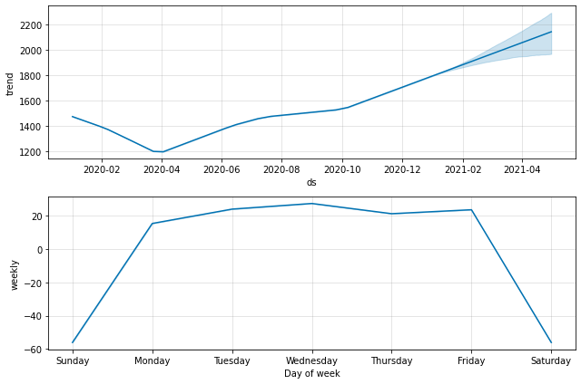
4. 2021년의 실제 데이터와 예측값을 비교해서 그려보기
plt.figure(figsize=(12,6))
plt.plot(Google.index, Google['Close'], label='real')
plt.plot(forecast['ds'], forecast['yhat'], label='forecast')
plt.grid()
plt.legend()
plt.show()
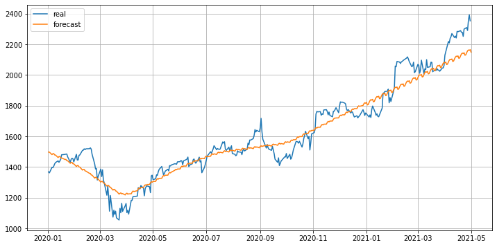
파라미터 조정하기
Trend 조절 (changepoint 조절)
- changepoint_range: changepoint 설정 가능 범위를 조절 (default: 80%)
- changepoint_prior_scale: changepoint의 유연성 조절 (default: 0.5)
- changepoints: 트렌드 변화 시점을 리스트로 직접 assign
- n_changepoints: changepoint의 개수를 조절
## 기본으로 잡히는 changepoint 시각화해보기
from fbprophet.plot import add_changepoints_to_plot # 필요한 함수
m = Prophet(yearly_seasonality=False, daily_seasonality=True)
m.fit(df)
future = m.make_future_dataframe(periods=121)
forecast = m.predict(future)
fig = m.plot(forecast)
add_changepoints_to_plot(fig.gca(), m, forecast);
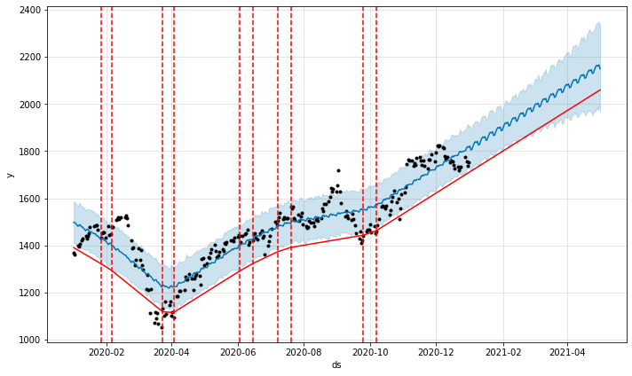
1. changepoint_range 조절
- 기본적으로 Prophet은 시계열 데이터의 80% 크기에서 ChangePoint를 지정
(overfitting을 피하기 위해 전체 데이터가 아닌 학습 데이터의 앞부분 80%의 데이터만을 사용해 변동점을 찾는 것)
# changepoint_range를 0.5로 변경
# 시계열 데이터의 앞 50%에서만 changepoint를 지정하라는 뜻
m = Prophet(yearly_seasonality=False, daily_seasonality=True, changepoint_range=0.5)
m.fit(df)
future = m.make_future_dataframe(periods=121)
forecast = m.predict(future)
fig = m.plot(forecast)
add_changepoints_to_plot(fig.gca(), m, forecast);
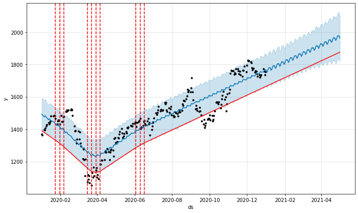
2. changepoint_prior_scale 조절
- ChangePoint의 유연성을 조정하는 방법
- 기본 값은 0.05이며, 값을 늘리면 더 유연해지고(=underfitting 해결), 값을 줄이면 유연성 감소(=overfitting 해결)
# changepoint_prior_scale를 0.1로 늘려봄.
# 0.05일 때(=default)보다 유동적으로 changepoint를 찾는 것을 알 수 있다. (→ overfitting 가능성)
m = Prophet(yearly_seasonality=False, daily_seasonality=True, changepoint_prior_scale=0.1)
m.fit(df)
future = m.make_future_dataframe(periods=121)
forecast = m.predict(future)
fig = m.plot(forecast)
a = add_changepoints_to_plot(fig.gca(), m, forecast)
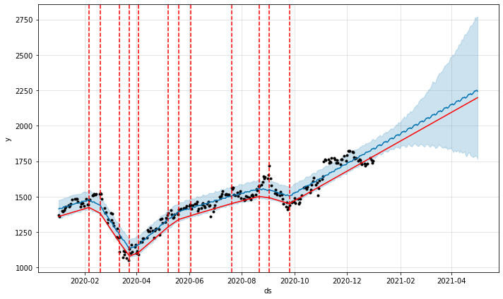
3. changepoints로 직접 날짜 assign
- changepoint일 수 있는 날짜들을 직접 지정해주는 것.
- changepoints에 값을 명시해주지 않으면 자동으로 changepoint들이 선택된다
# changepoint를 내가 직접 지정해줌
m = Prophet(yearly_seasonality=False, daily_seasonality=True, changepoints=['2020-03-20', '2020-09-25'])
m.fit(df)
future = m.make_future_dataframe(periods=121)
forecast = m.predict(future)
fig = m.plot(forecast)
a = add_changepoints_to_plot(fig.gca(), m, forecast)
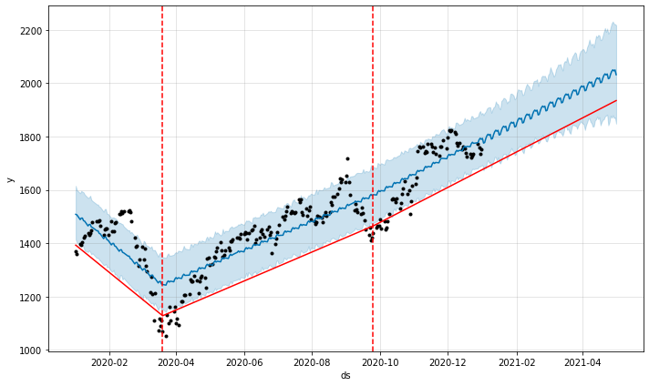
Seasonality 반영
- yearly_seasonality: 연 주기의 계절성을 반영. default는 10.
- weekly_seasonality: 주간 주기의 계절성을 반영. default는 3
- daily_seasonality: 일 주기의 계절성을 반영. default는 4
- seasonality_mode: ‘additive’ 혹은 ‘multiplicative’ (‘additive’가 default)
- seasonality_prior_scale: 계절성 반영 강도
1. yearly_seasonality
# yearly_seasonality=True라고 해주면 default값인 10으로 설정됨
m = Prophet(yearly_seasonality=True)
m.fit(df)
future = m.make_future_dataframe(periods=121)
forecast = m.predict(future)
m.plot_components(forecast);
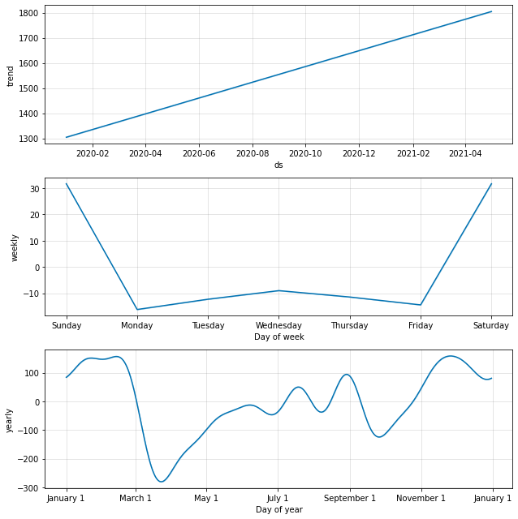
# 연 단위의 seasonality가 있다고 간주→ 2020년과 동일하게 3월에 급감하는 모양으로 예측
m.plot(forecast);
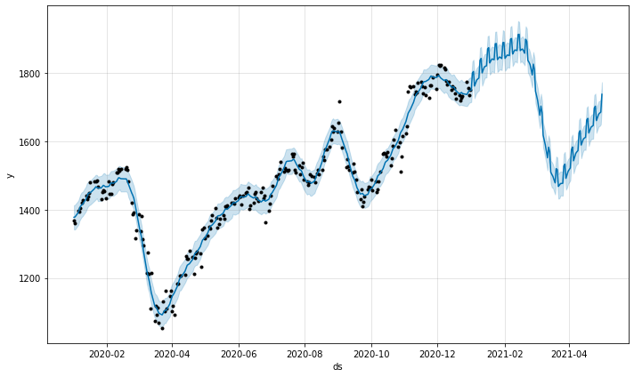
+) yearly_seasonality의 강도 높여보기
# yearly_seasonality를 20으로 설정해주면, default값인 10에 비해 더 연 계절성을 강하게 반영
m = Prophet(yearly_seasonality=20)
m.fit(df)
future = m.make_future_dataframe(periods=121)
forecast = m.predict(future)
m.plot_components(forecast);
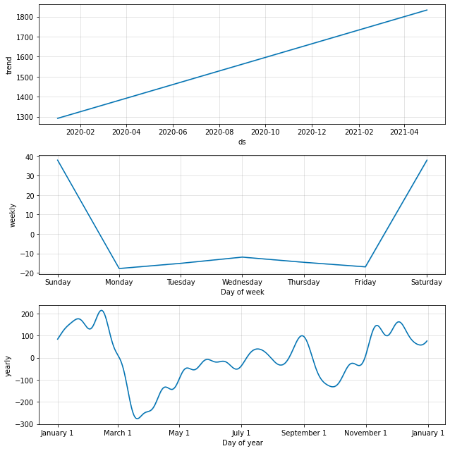
m.plot(forecast); # yearly_seasonlity가 더 강하게 반영됨
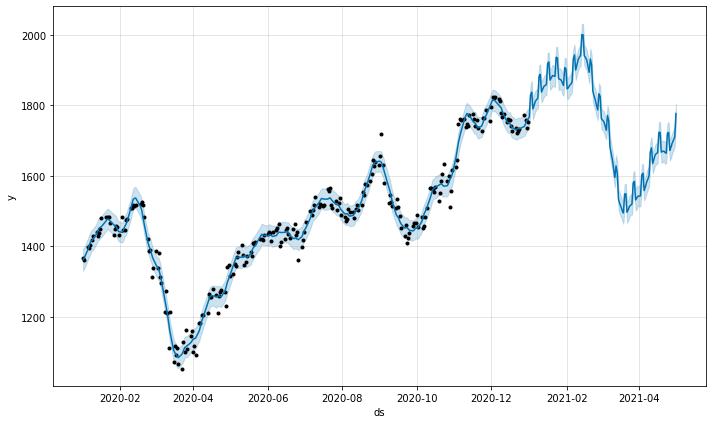
2. weekly_seasonality
# weekly_seasonality는 따로 써주지 않아도 default로 3이 들어감. 20으로 넣으면 더 강하게 반영.
m = Prophet(weekly_seasonality=20)
m.fit(df)
future = m.make_future_dataframe(periods=121)
forecast = m.predict(future)
m.plot_components(forecast);
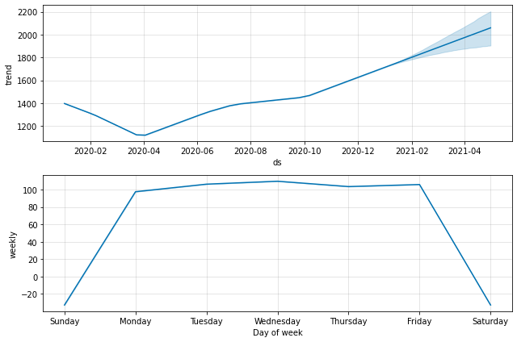
m.plot(forecast); # weekly_seasonlity가 강하게 반영됨
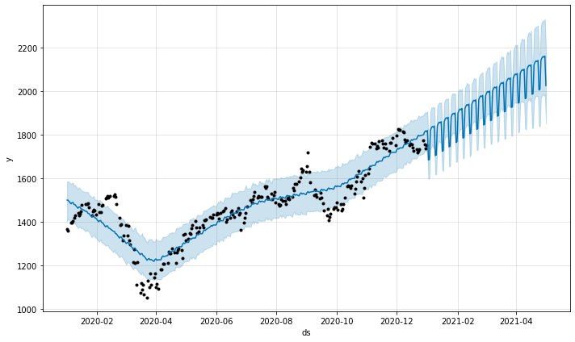
3. daily_seasonality
# daily_seasonality=True라고 해주면 default값인 4으로 설정됨
m = Prophet(daily_seasonality=True)
m.fit(df)
future = m.make_future_dataframe(periods=121)
forecast = m.predict(future)
m.plot_components(forecast);
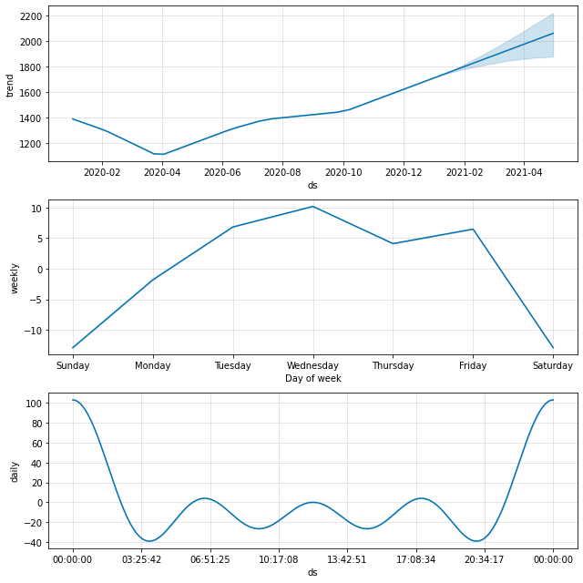
m.plot(forecast); # daily_seasonlity가 반영됨

+) daily_seasonality의 강도 높여보기
m = Prophet(daily_seasonality=20) # default: 4
m.fit(df)
future = m.make_future_dataframe(periods=121)
forecast = m.predict(future)
m.plot_components(forecast);
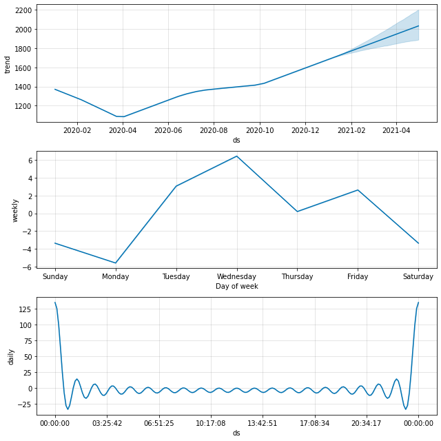
m.plot(forecast); # daily_seasonlity가 강하게 반영됨
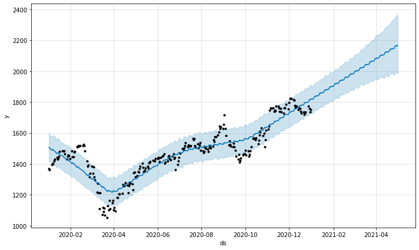
4. custom seasonality 추가
- m.add_seasonality()로 직접 seasonality를 만들어 추가할 수 있다
# monthly seasonality 만들어서 추가해보기
m = Prophet()
m.add_seasonality(name='monthly', period=30.5, fourier_order=5)
m.fit(df)
future = m.make_future_dataframe(periods=121)
forecast = m.predict(future)
m.plot_components(forecast);
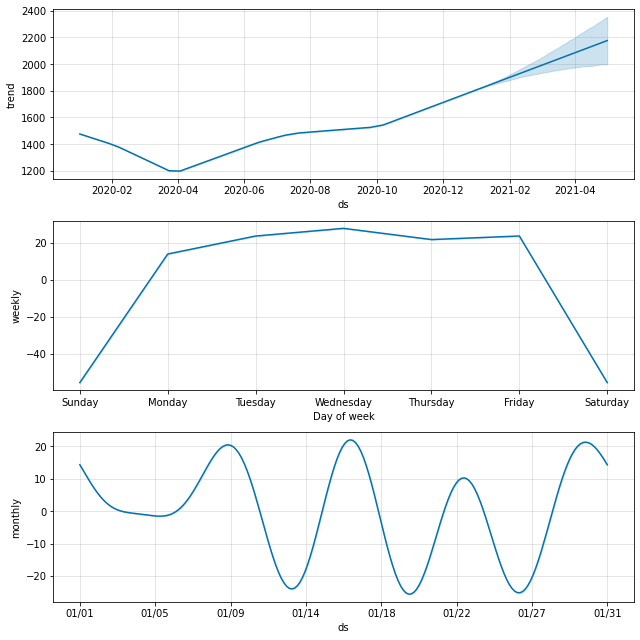
m.plot(forecast);
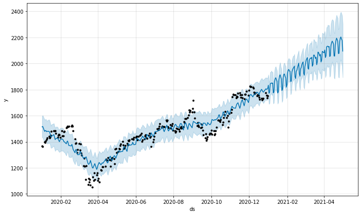
5. multiplicative seasonality
- seasonality_mode: additive가 default
- additive는 seasonality가 일정함을 의미하고, multiplicative는 seasonality가 트렌드와 함께 점점 증가함을 의미
- multiplicative seasonality가 필요한 경우: number of air passengers 예시
# seasonality_mode='multiplicative'라고 설정해주면 점점 seasonality가 증가하는 것으로 반영됨
m = Prophet(yearly_seasonality=False, daily_seasonality=True, seasonality_mode='multiplicative')
m.fit(df)
future = m.make_future_dataframe(periods=121)
forecast = m.predict(future)
m.plot(forecast); # 이 데이터에서는 사실 multiplicative seasonality가 필요하지 않음
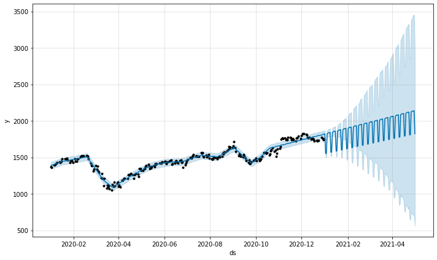
Holiday 반영
- holidays: 휴일 / 이벤트 기간을 명시한 데이터프레임
- ‘lower_window’, ‘upper_window’를 설정해 전후 기간에 미치는 휴일의 영향을 반영 가능
- holiday_prior_scale: holiday 반영 강도 (default는 10)
- holiday의 영향을 키우고 싶으면 숫자를 키우고, 영향을 줄이고 싶으면 숫자를 줄여서 써주면 됨
- m.add_country_holidays(country_name=’US’) 이렇게 하면 특정 국가의 공휴일 정보를 가져다 쓸 수 있음.
# 직접 holiday 정보를 담은 dataframe을 생성
# lower_window=0, upper_window=1: 휴일이 전날에는 영향을 주지 않고, 다음날 하루 정도는 영향을 더 준다는 가정
holiday = pd.DataFrame({
'holiday': 'holiday',
'ds': pd.to_datetime(['2020-01-24', '2020-01-25', '2020-01-26',
'2021-02-11', '2021-02-12', '2021-02-13']),
'lower_window': 0,
'upper_window': 1
})
m = Prophet(holidays=holiday, daily_seasonality=True)
m.add_country_holidays(country_name='US') # 내장되어 있는 휴일 정보를 불러와서 추가
m.fit(df)
future = m.make_future_dataframe(periods=121)
forecast = m.predict(future)
m.plot(forecast);
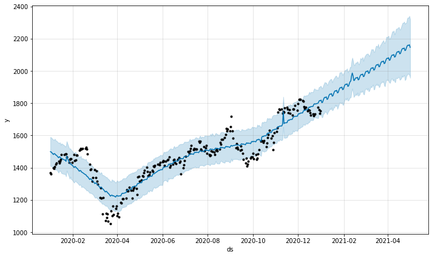
m.plot_components(forecast);
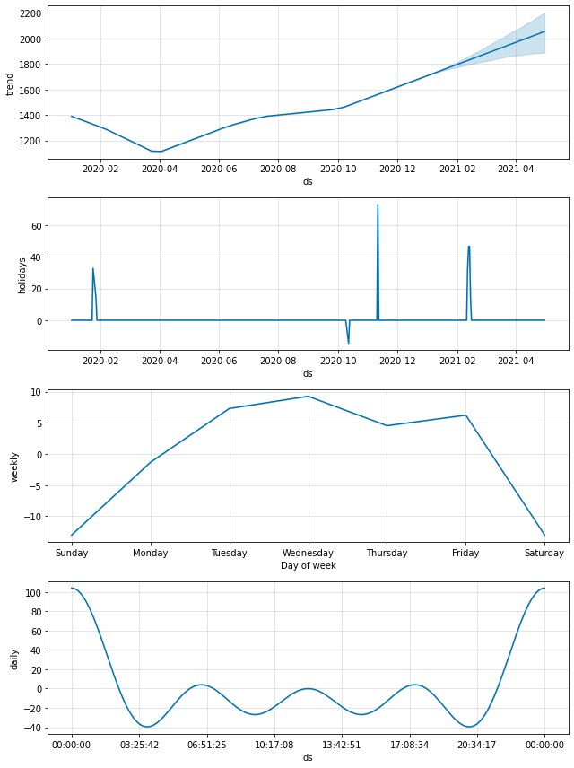
+) 어떤 holidy들이 training에 반영되었는지 확인:
m.train_holiday_names
0 holiday
1 New Year's Day
2 Martin Luther King Jr. Day
3 Washington's Birthday
4 Memorial Day
5 Independence Day
6 Independence Day (Observed)
7 Labor Day
8 Columbus Day
9 Veterans Day
10 Thanksgiving
11 Christmas Day
dtype: object
Outlier 제외하기
- 특정 기간의 데이터가 유독 트렌드를 벗어나게 이상한 수치를 보일 경우, 제외하고 학습시킬 수도 있다
## 코로나 pandemic으로 주가가 급락-급증한 2020년 상반기 일부를 제외하고 학습
df.loc[(df['ds'] > '2020-02-01') & (df['ds'] < '2020-05-01'), 'y'] = None
m = Prophet(yearly_seasonality=False, daily_seasonality=True)
m.fit(df)
future = m.make_future_dataframe(periods=121)
m.plot(m.predict(future));
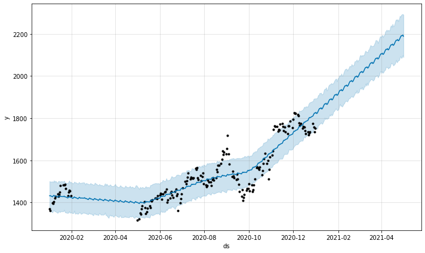